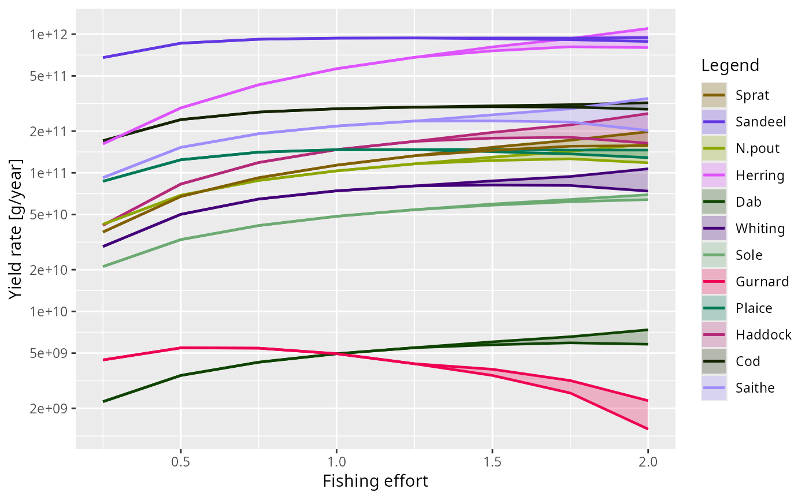
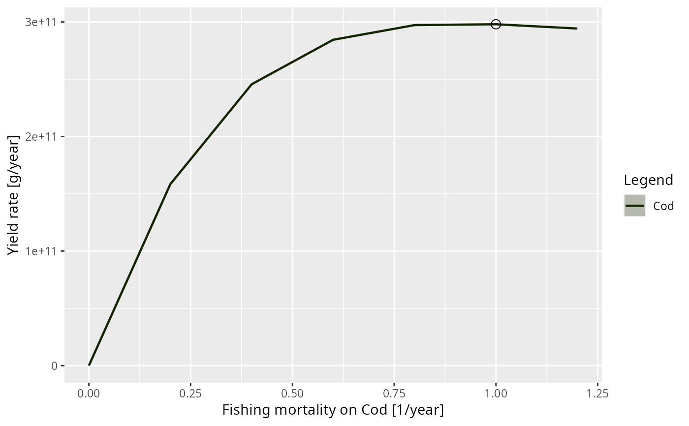
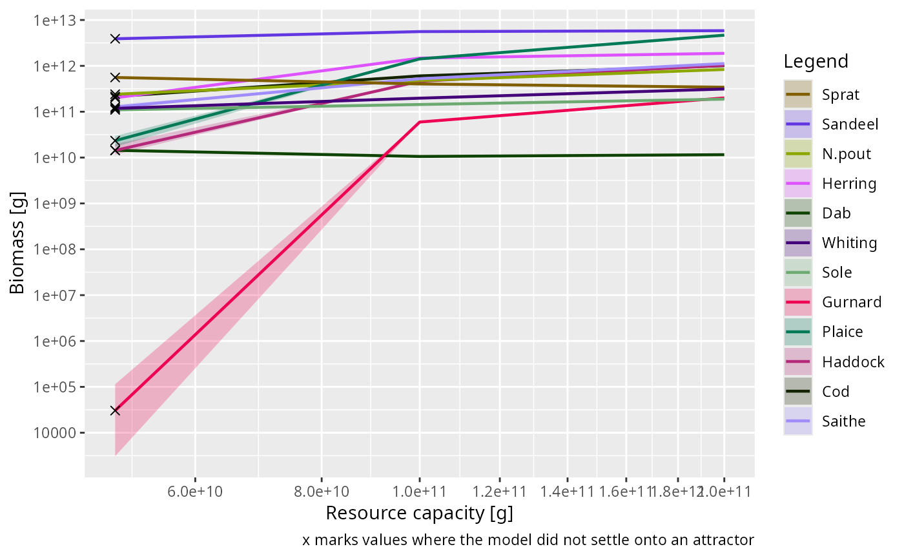

![[Experimental]](figures/lifecycle-experimental.svg) Varies one aspect of a model over a range of values and measures a quantity
at each of them. At every value the model is projected until it settles onto
an attractor, and the quantity is measured on that attractor rather than at
whatever state the projection happened to stop at.
Varies one aspect of a model over a range of values and measures a quantity
at each of them. At every value the model is projected until it settles onto
an attractor, and the quantity is measured on that attractor rather than at
whatever state the projection happened to stop at.
Usage
scanModel(
params,
scan_values,
set_func,
value_func = getBiomass,
species = NULL,
scan_name = NULL,
scan_units = NULL,
value_name = NULL,
value_units = NULL,
reference_lines = NULL,
current_scan_value = NULL,
continuation = TRUE,
distance_func = distanceSSLogN,
distance_tol = 0.001,
residual_tol = steady_residual_tol(),
t_per = 1.5,
t_max = 100,
dt = 0.1,
t_save = dt,
amplitude_tol = 0.01,
amp_rel_tol = 0.1,
extinction_threshold = 1e-06,
method = c("euler", "predictor_corrector", "tr_bdf2"),
t_sample = 10,
sample_all = FALSE,
progress_bar = interactive(),
info_level = 0,
...
)Arguments
- params
An object of class
MizerParams.- scan_values
A numeric vector of values to scan over.
- set_func
A function of
(params, value)returning a modifiedMizerParamsobject. Several are provided:scanEffort(),scanFishingMortality()andscanSpeciesParam().- value_func
A function of a
MizerSimreturning the quantity to measure. Defaults togetBiomass().- species
The species to keep in the result. By default all of the series that
value_funcreturns.- scan_name
A string naming the quantity that is varied, used for the x-axis label and as the name of the first column of the result. Taken from
set_funcwhen it supplies one.- scan_units
A string giving the units of that quantity.
- value_name
A string naming the quantity that is measured, used for the y-axis label and as the name of the second column of the result. Taken from what
value_funcreturns when it supplies one.- value_units
A string giving the units of that quantity.
- reference_lines
An optional named numeric vector of positions on the x axis for
plot.MizerScan()to mark with vertical dashed lines, for examplec(F_MSY = 0.32). Taken fromset_funcwhen it supplies one.- current_scan_value
The value at which the model currently sits. When given, the scan works outwards from it in both directions so that every projection starts from a neighbouring attractor rather than from a distant state, and each of the two directions begins again at the model as it was given. Pass
"auto"to askset_funcfor it. By default the values are scanned in the order given, which is also how you trace a hysteresis branch deliberately: pass a decreasingscan_values.- continuation
Whether each scan value should start from the attractor reached at the previous one. Default TRUE.
- distance_func
A function that will be called after every
t_peryears with both the previous and the new state and that should return a number measuring the distance between them. SeedistanceSSLogN().- distance_tol
The projection at each scan value stops once the number returned by
distance_funcfor two statest_peryears apart drops belowdistance_tol. The default is tighter than the oneprojectUntilSettled()uses on its own, because a scan produces a curve, and a loosely converged point does not average away: it shows up as a kink in the curve and as spurious width in the band. Loosen it to go faster, and use theresidualcolumn of the result to check whether that cost you anything.- residual_tol
The largest relative rate of biomass change, in 1/year, at which a scan point may still be recorded as a fixed point. See
projectUntilSettled(). A point that meetsdistance_tolbut not this is not sampled as a single value, which would draw it as a band of zero width.- t_per
The interval in years at which convergence is checked. Should be an odd multiple of
dt.- t_max
The longest time to project at each scan value.
- dt
The time step to use.
- t_save
The interval at which the biomass summary used for limit-cycle detection is recorded, see
projectUntilSettled().- amplitude_tol
The minimum relative biomass amplitude for a persistent oscillation to count as a limit cycle rather than a fixed point.
- amp_rel_tol
Maximum relative change of amplitude between successive periods for a cycle to count as settled.
- extinction_threshold
A species is treated as going extinct once its reproduction rate falls below this fraction of its value at the start of the projection.
- method
The numerical method to use, see
project().- t_sample
The number of years over which to average when the model has settled onto neither a fixed point nor a limit cycle.
- sample_all
Whether to run the sampling projection even at a fixed point, where it is not otherwise needed. Set this if
value_funcneeds more than one time step.- progress_bar
Whether to show a text progress bar over the scan values.
- info_level
Controls how much the projections say for themselves. Defaults to 0, because a scan makes one projection per scan value and summarises them itself; raise it when investigating why one of them behaved oddly.
- ...
Further arguments are passed on to
distance_func.
Value
An object of class MizerScan, which is a data frame with one row
per scan value and series, carrying the metadata that plot() needs.
Details
You say what to vary by giving a function that changes the model, and what to measure by giving a function that computes a quantity from a simulation. So a yield-versus-fishing-mortality curve, a bifurcation diagram over fishing effort and a scan over the resource carrying capacity are all the same function call with different arguments.
This is a generic function with a method for objects of class MizerParams.
What is measured, and where
At each scan value the model is projected with projectUntilSettled(), which
stops as soon as it recognises that the model has settled onto a fixed point
or onto a limit cycle, and reports which of the two happened. What happens
next depends on that answer:
- A fixed point
The state does not change, so there is nothing to average. The quantity is read off the settled state with no further projection at all, and the reported minimum and maximum are equal to it.
- A limit cycle
The model is projected for exactly one period of the detected cycle and the quantity is averaged over it, which is its long-term average. The minimum and maximum over the cycle are reported too.
- Neither
The model did not settle within
t_maxyears, or a species went extinct. The quantity is averaged over the lastt_sampleyears and the scan values concerned are named in a message, because those points should not be relied on.
Averaging over exactly one period is both faster and more accurate than
averaging over a fixed number of years. A window that is not a whole number
of periods leaves a residue of the oscillation in the average, which shows up
as a jagged curve. The window is rounded to a whole number of time steps, so
it can differ from the true period by up to dt/2; if you need the average
more accurately, reduce dt rather than lengthening the window, because a
longer window that is not a whole number of periods is worse, not better.
Writing the two functions
set_func(params, value) takes a MizerParams object and one entry of
scan_values and returns a modified MizerParams. It must be idempotent
— set_func(set_func(p, v), v) must give the same thing as
set_func(p, v) — because with continuation = TRUE it is applied to the
object it returned at the previous scan value. Setting something is
idempotent; appending something is not, so a function that adds a gear must
check whether the gear is already there. See scanFishingMortality() for a
worked example.
There is no effort argument, because there does not need to be one:
project() and projectUntilSettled() both take the fishing effort from
params@initial_effort, so a set_func() that changes the effort is all it
takes to scan over effort, and a scan over something else never has to
mention fishing at all.
value_func(sim) takes a MizerSim and returns either a time by series
matrix, as getBiomass(), getYield(), getSSB(), getN() and
sizeIntegral() all do, or a plain numeric vector over time, as
getMeanWeight() does. When it returns a matrix carrying value_name and
units attributes — which all of mizer's MizerSim methods do — those are
used for the y-axis label unless you override them.
Note that at a fixed point value_func() is handed a simulation with a
single time step, so a function that needs more than one time step will not
work there. Set sample_all = TRUE to force the sampling projection at every
scan value.
Neither function can be given extra arguments through ..., which is
reserved for distance_func. Use a closure instead, for example
value_func = function(sim) getBiomass(sim, min_w = 10).
See also
MizerScan(), plot.MizerScan(), scanEffort(),
scanFishingMortality(), scanSpeciesParam(), plotYieldVsF()
Other scan functions:
MizerScan(),
plot.MizerScan(),
plotYieldVsF(),
scanEffort()
Examples
# \donttest{
# A bifurcation diagram over fishing effort
scan <- scanModel(NS_params, scan_values = seq(0, 2, 0.25),
set_func = scanEffort(), value_func = getYield)
#> The model settled onto a limit cycle at Fishing effort = 1.5, 1.75, 2. The value there is the average over one period of the cycle.
plot(scan, style = "envelope")

# A yield curve for a single species, and the F at which it is largest
cod <- scanModel(NS_params, scan_values = seq(0, 1.2, 0.2),
set_func = scanFishingMortality("Cod"),
value_func = getYield, species = "Cod")
plot(cod, mark_max = TRUE, log_y = FALSE)

attr(cod, "at_max")
#> Cod
#> 1
# Scanning something that has nothing to do with fishing
kappa <- resource_params(NS_params)$kappa
plot(scanModel(NS_params, scan_values = kappa * c(0.5, 1, 2),
set_func = function(params, value) {
resource_params(params)$kappa <- value
params
},
scan_name = "Resource capacity", scan_units = "g"),
log_x = TRUE)
#> Warning: Gurnard are going extinct.
#> A species was on its way to extinction at Resource capacity = 5e+10, which stopped the projection early. The value there is only the average over the 10 years following that point.

# }